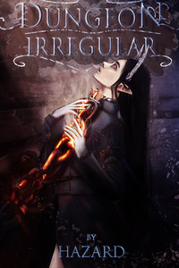

Book Cover
Made in 2020
I put a little more effort into this one, as it was intended for a cover of a fantasy novel. Unfortunately, I lost the original psd file so this is the highest res I could find of this artwork.

Blonde Character WIP
WIP from 2019
A character concept that used warpicks for weapons. It was also supposed to be a character from the book. I ended up not finishing it.

Rogue Study
Sketches and studies
I found one of my old files that contained sketches. Still refining anatomy and shading.

Another hot girl
One of the earlier renders
For some reason the only files that survived the few wipes of my drives are drawings of girls lmao.

Action Poses
This one is a quick 30 min sketch from 2019.